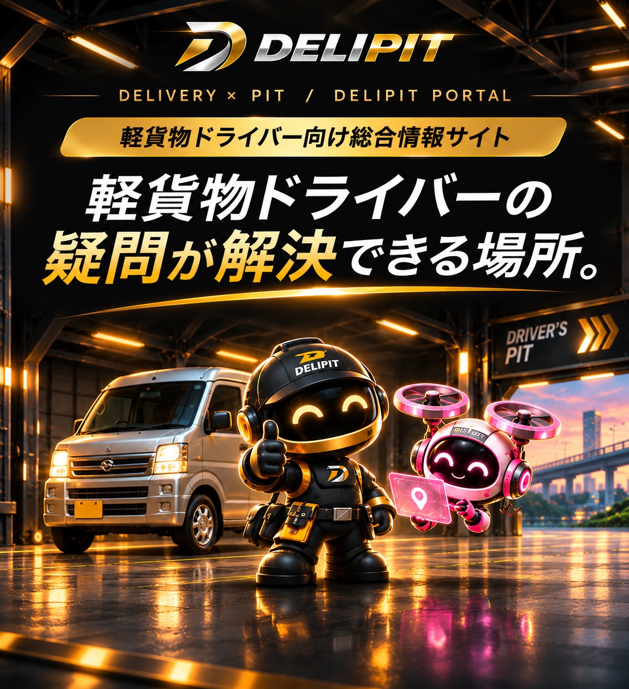

DRIVER NOTE
配送の組み立て、数字との向き合い方。現場で感じたことを、本人の言葉で。
2026.10.27 / #11自分には今すぐ必要ない機能を追加した理由。NOTE一覧へ →
FIND YOUR ANSWER
今の悩みに近い項目を選ぶと、解説記事を直接読めます。
調査・制作中：事故対応、年末の売上計上、インボイスの詳しい解説。内容を確認できた順に、ここから案内します。
FOR NEW DRIVERS
開業と契約の条件を知ってから、準備へ。
稼働前に確認しておきたい3つのガイド。
FIND YOUR GUIDE
ON THE ROAD
現役ドライバーの実体験から、
自分の現場で考えるヒントを。
個人の経験です。現場や契約によって条件は異なります。
YOUR BUSINESS
「いくら売り上げたか」から、
経費と入金を確かめるところまで。
税務の個別判断は、国税庁の案内や専門家へ確認してください。
SAFETY & RECORDS
一人で事業を営む方も、まずは自分に
必要な点呼・点検・記録を確かめましょう。
制度の対象・施行日・経過措置は、
リンク先の解説と公的資料で確認してください。
点呼・日常点検
業務・走行の記録
点呼・記録の確認
FROM THE FIELD
配送の組み立て、数字との向き合い方。現場で感じたことを、本人の言葉で。
2026.10.27 / #11自分には今すぐ必要ない機能を追加した理由。NOTE一覧へ →制度や業界の情報を、仕事の確認へ。公表日・施行日・解説の確認日を分けて読みます。
公的資料の読み方制度の情報で、自分は何を確認すればいい？NEWS・参考資料へ →FREE DRIVER TOOLS
配送個数、売上、経費をまとめて管理。複数委託先・報酬方式にも対応。
DELIPITを開く日々の安全確認と業務記録をサポート。
1.0.0 / 2026.11.01 正式公開
記録は利用端末に保存されます。各アプリの案内に従い、定期的にBackupしてください。
BUILT FROM THE FIELD
DELIPITを開発・運営するSORAは、現役の業務委託配送ドライバーです。このサイトでは、本人の実体験と、公的資料に基づく解説を区別して届けます。